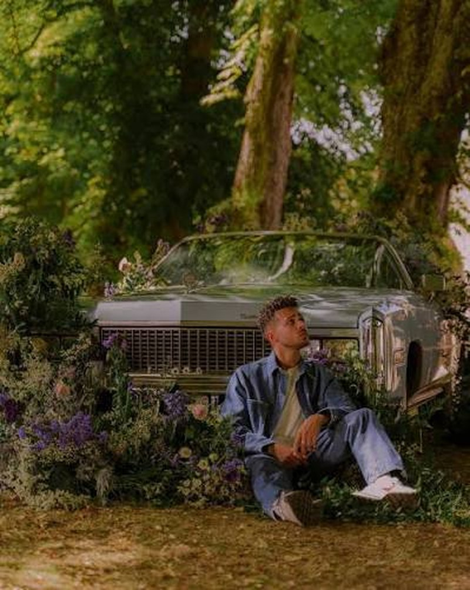

Mastu · Titre unique
Balade à deux
Une virée en cabriolet, des fleurs sur le capot, et une chanson qu'on rejoue sans compter — sauf qu'ici, on compte.
0:00
0:00
0
écoutes
0h 00
temps d'écoute total
La lecture continue tant que cet onglet reste ouvert — écran verrouillé compris, sur la plupart des téléphones — grâce aux commandes intégrées au verrouillage. Ajoute la page à ton écran d'accueil pour la meilleure tenue en arrière-plan. Un téléphone réellement éteint ne peut en revanche rien lire : la compteuse reprend là où elle s'est arrêtée dès que tu rouvres la page.
